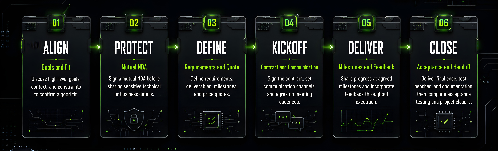

End-to-End Engagement
Support from early planning and architecture alignment through verification closure and delivery readiness.
About ADN Semiconductors
ADN Semiconductors helps product teams move from architecture intent to production-ready silicon with disciplined execution across design, verification, DFT, prototyping, and embedded integration.
We collaborate with fabless, IDM, and systems organizations that need dependable engineering capacity, clear governance, and practical decision support through every major milestone.
Our focus is simple: reduce avoidable risk, improve delivery predictability, and create measurable progress from kickoff to handoff.
Support from early planning and architecture alignment through verification closure and delivery readiness.
Execution discipline backed by milestone tracking, risk logs, and transparent status communication.
Delivery Model

Technical Depth
SystemVerilog and Verilog based implementation for high‑performance and low‑power digital subsystems, using Synopsys and Cadence design flows.
UVM‑based environments, constrained‑random testing, assertions, coverage strategy, and debug closure across Synopsys and Cadence verification flows.
Scan architecture support, test planning coordination, and integration practices aligned with production goals.
Rapid prototyping flows using AMD Xilinx platforms to de‑risk integration and accelerate hardware‑software co‑validation.
Firmware integration and platform-level debug support for smoother lab and pre-production transitions.
Scripted workflows, regression orchestration, and productivity tooling with Git, GNU utilities, and VS Code for repeatable engineering throughput.
Assurance
ADN Semiconductors aligns project execution with customer quality systems, documentation expectations, and engineering governance requirements from kickoff through sign-off.
We maintain traceable review artifacts, milestone evidence, and structured communication to support auditability, decision readiness, and stakeholder confidence.
For certifications and compliance programs, we collaborate with client teams to produce required technical evidence, process records, and implementation transparency.
Our certification and assessment programs are currently in progress, including ISO 27001, ISO 9001, CMMI Level 3, and SOC 2 Type II.
Industry Presence
We actively engage with the broader semiconductor ecosystem through industry communities, technology partners, and collaborative knowledge-sharing channels.
These relationships help ADN stay current with evolving practices in design, verification, and product delivery while connecting clients to wider technical perspectives.
Engagement with professional forums and events that shape modern semiconductor engineering practices.
Collaboration across tooling, IP, and platform ecosystems to support pragmatic execution paths.